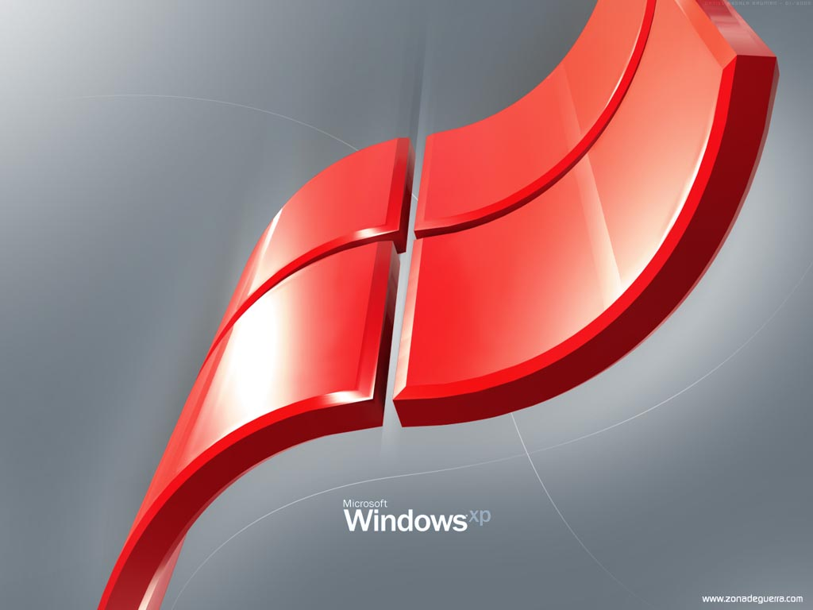

There are several kinds of Operating Systems which are used in today's life some of them are Windows of Microsoft Corporation, Android Of Google, Mac OS (Macintosh Operating System) comes in Apple devices, Linux, Lunix, Symbian
 What is OS
What is OSAn Operating System (OS) can be defined as a Software which is used to access a Computer System and allows extentions to access.It is a computer software which creates a link between User and hardware. One of the example is .jpeg file can be accessed in Windows, Android & many Operating Systems (OS).
 Uses of Operating Systems